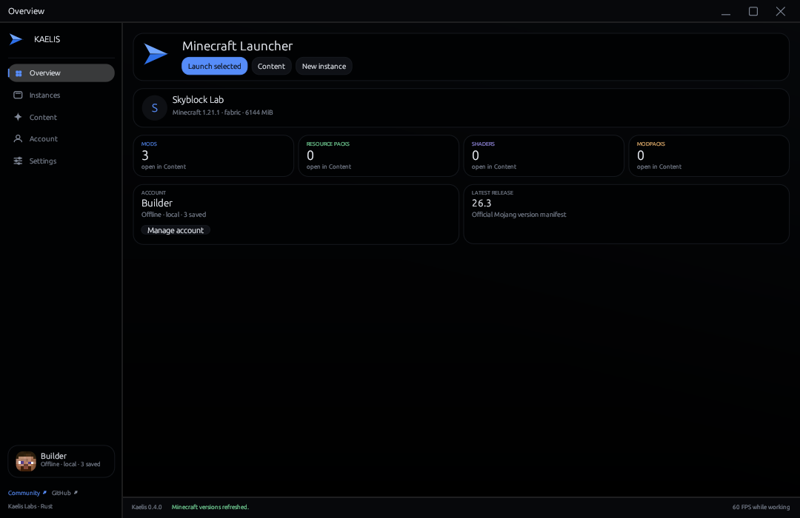
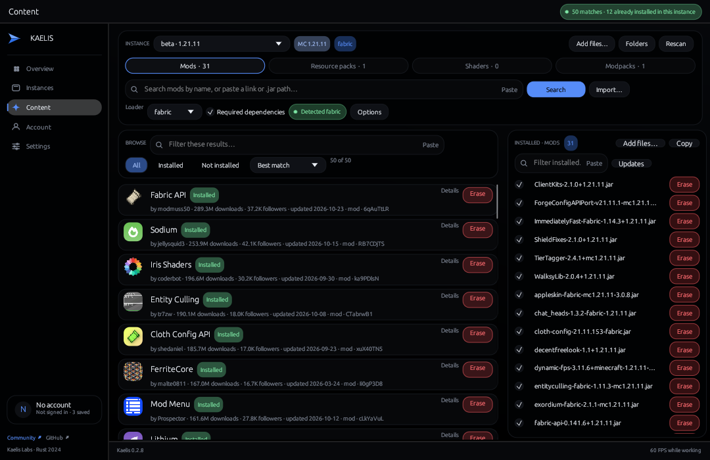
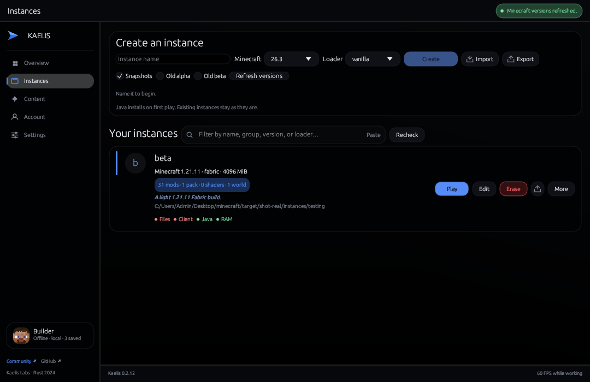
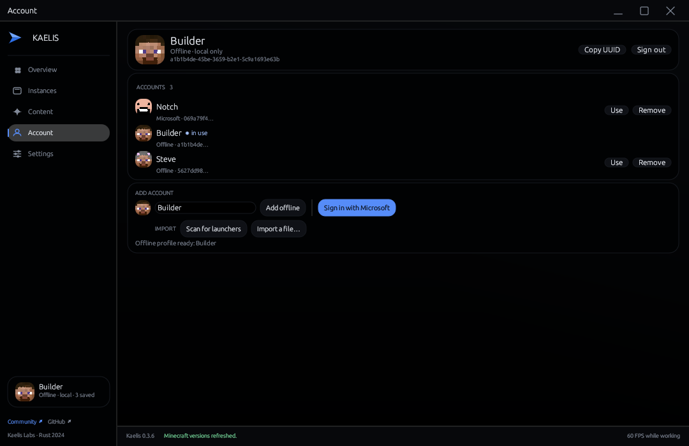
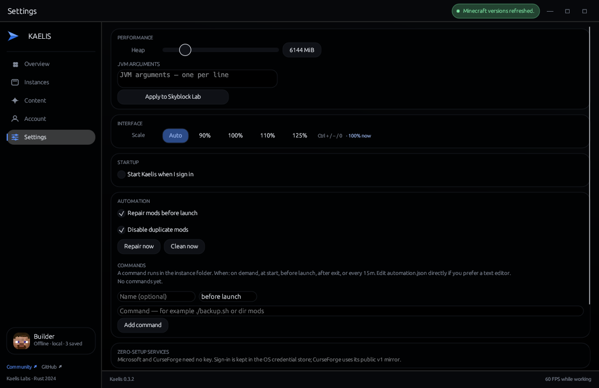

One content channel
Mods, packs, shaders, and modpacks from Modrinth and CurseForge in one search.
Instances, mods, packs, shaders, and accounts in one native workspace. Files stay local. Nothing runs in the background.

No wizards, no dashboards, no accounts to create.
Mods, packs, shaders, and modpacks from Modrinth and CurseForge in one search.
One pass checks every installed mod. Stable stays stable, disabled stays disabled. Only file hashes leave.
Pick jars and packs, or drop files and folders on the window. Every file lands in the right place.
Duplicate an instance with or without worlds, or export it as one archive.
The matching runtime is provisioned on first play. Existing JDKs are found too.
Microsoft and offline accounts side by side, each with its skin head. Microsoft sign-in shows a short code, opens the Microsoft page, and needs no setup. Switch in one click.
Logs, caches, and crash dumps vanish at launch and after every game. Saves, mods, and configs stay.
Captured from the shipped build, not a mockup.




All builds are the same Rust workspace. MIT licensed, no account needed.
One executable. Extract anywhere and run. Instances stay in your profile.
Per-user install, Start menu shortcut, clean uninstaller.
Universal binary. Ad-hoc signed, so the first launch is right-click → Open.
git clone https://github.com/fuvji/kaelis && cd kaelis && ./packaging/macos/bundle.sh --universal
Per-user install with a desktop entry and icon. X11 and Wayland.
git clone https://github.com/fuvji/kaelis && cd kaelis && ./packaging/linux/install.sh
Every artifact is hashed at release time. Published files: SHA256SUMS.txt and the generated URL & installation index.
1afdf2a49959229bb6b4dd751c6bb8496bf9000ce26eb68801a7a50389823575cbd36b5be73be2d6e6f8c1585c83b3f0125cf230d1ca6e266248729652bf43bf1d77d4b5b4fd9a981ad29cbdb83ad6acf793b381023370da1831b5c40d0a7f43shasum -a 256 -c SHA256SUMS.txtOne workspace, every channel, one click from launch.
One JSON document per call. Stable field names, no window, no scraping.
kaelis --list-instances --json
kaelis --status --json
kaelis --play <instance> --offline Steve
Yes. MIT licensed, free to use, modify, and redistribute. There is no paid tier and no account to create.
No. Offline profiles work immediately and show the premium skin that owns the name. Microsoft sign-in is optional: one click, a short code on the Microsoft page, and the refresh token stays in the OS keychain.
No telemetry, no analytics, no background services. Kaelis contacts Mojang, Modrinth, and CurseForge only for the files you ask for.
CurseForge requires every client to send its own API key. A free key enables those results; Modrinth and local files work without one.
The installer is not code-signed with a commercial certificate, so SmartScreen may ask once. Verify the SHA-256 checksum above and only run a copy from this page or the GitHub release.
Yes. Use the portable ZIP. Set KAELIS_DATA_DIR to keep instances and settings beside the executable.